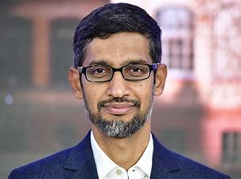

History of Google

By some accounts, they disagreed about nearly everything during that first meeting, but by the following year they struck a partnership. Working from their dorm rooms, they built a search engine that used links to determine the importance of individual pages on the World Wide Web. They called this search engine Backrub.
Soon after, Backrub was renamed Google (phew). The name was a play on the mathematical expression for the number 1 followed by 100 zeros and aptly reflected Larry and Sergey's mission “to organize the world’s information and make it universally accessible and useful.”
Over the next few years, Google caught the attention of not only the academic community, but Silicon Valley investors as well. In August 1998, Sun co-founder Andy Bechtolsheim wrote Larry and Sergey a check for $100,000, and Google Inc. was officially born. With this investment, the newly incorporated team made the upgrade from the dorms to their first office: a garage in suburban Menlo Park, California, owned by Susan Wojcicki (employee #16 and now CEO of YouTube). Clunky desktop computers, a ping pong table, and bright blue carpet set the scene for those early days and late nights. (The tradition of keeping things colorful continues to this day.)
Even in the beginning, things were unconventional: from Google’s initial server (made of Lego) to the first “Doodle” in 1998: a stick figure in the logo announcing to site visitors that the entire staff was playing hooky at the Burning Man Festival. “Don't be evil” captured the spirit of our intentionally unconventional methods. In the years that followed, the company expanded rapidly — hiring engineers, building a sales team, and introducing the first company dog, Yoshka. Google outgrew the garage and eventually moved to its current headquarters (a.k.a.“The Googleplex”) in Mountain View, California. The spirit of doing things differently made the move. So did Yoshka.
The relentless search for better answers continues to be at the core of everything we do. Today, Google makes hundreds of products used by billions of people across the globe, from YouTube and Android to Gmail and, of course, Google Search. Although we’ve ditched the Lego servers and added just a few more company dogs, our passion for building technology for everyone has stayed with us — from the dorm room, to the garage, and to this very day.
About CEO of Google
Sundar Pichai is a computer engineer and the current CEO of Google Inc. The technology giant Google, which specializes in Internet-related services and products, underwent a major corporate restructuring in 2015 following which Alphabet Inc was launched as its parent company with co-founders Larry Page as its CEO and Sergey Brin as President. Pichai, who had been serving as Google’s head of Products and Engineering, was named the new CEO of Google which is the biggest company under Alphabet Inc. Pichai had joined Google years ago in 2004 as a product manager and led the innovative efforts for several of Google’s products including Google Chrome and Chrome OS which went on to become highly successful. Eventually he took over the management of other Google products like Gmail and Google Docs, and rose through the ranks rapidly. Born in Chennai, India, Pichai was bright and creative from a young age. Having received his education from some of the most prestigious institutions in the world, he worked in engineering and product management at Applied Materials and in management consulting at McKinsey & Company before becoming a part of Google. Pichai is well-liked by his colleagues and is dubbed as the “man behind Google’s most important products